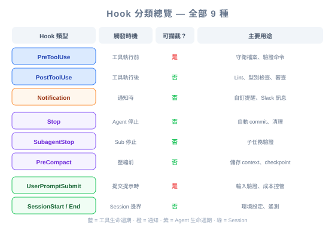

| 项目 | 内容 |
|---|---|
| 考试对应 | D3 — Claude Code Configuration & Workflows（占 20%）、D1 — Agentic Architecture（占 27%） |
| Task Statements | 1.5（Agent SDK hooks）、3.2（custom commands & hooks）、1.7（session state & resumption） |
| 课程来源 | claude-code-in-action / 05-hooks / Lesson 19（纯文字课程） |

Claude Code 有 9 种 hook 类型——不只是 PreToolUse 和 PostToolUse。额外的 hook（Stop、SubagentStop、Notification、PreCompact、UserPromptSubmit、SessionStart、SessionEnd）覆盖了完整的 AI session 生命周期。对 PM 来说，这代表你可以在 AI 工作流的每个阶段指定自动化——从 session 开始到结束，而不只是工具执行期间。
理解完整的 hook 分类让你能写出更精确的需求：
| PM 的问题 | 对应 Hook | 需求示例 |
|---|---|---|
| 「AI 完成任务后会发生什么？」 | Stop |
「每次 review session 后生成摘要报告」 |
| 「环境如何设置？」 | SessionStart |
「Claude 启动时加载项目配置」 |
| 「子任务完成后怎么处理？」 | SubagentStop |
「coordinator 使用前验证 subagent 输出」 |
| 「如何保存 context？」 | PreCompact |
「自动压缩前 extract 关键决策」 |
| 「能验证用户输入吗？」 | UserPromptSubmit |
「处理前根据 template 检查 prompt」 |
不知道这些 hook 类型的话，PM 只能写出模糊的需求如「系统应该记录所有东西」——工程师无法精确实现。
把 AI session 想成酒店住客的住宿过程：
| 酒店事件 | Hook 类型 | 发生什么 |
|---|---|---|
| 住客 check in | SessionStart |
房间准备好、加载偏好设置 |
| 住客提出要求（客房服务） | PreToolUse |
验证要求是否允许、确认额度 |
| 要求完成 | PostToolUse |
质量检查、更新账单 |
| 住客找前台但没人 | Notification |
通知经理（需要权限或闲置中） |
| 礼宾部完成委托的跑腿 | SubagentStop |
带着结果汇报给住客 |
| 房间变得凌乱 | PreCompact |
客房在打扫前保存重要物品 |
| 住客投意见箱 | UserPromptSubmit |
前台先审阅再转交管理层 |
| 住客今天的要求都完成了 | Stop |
准备每日摘要 |
| 住客 check out | SessionEnd |
结账、清理、累积会员积分 |
💡 PM 重点
你不需要理解每个 hook 的技术实现。你需要知道哪些生命周期时刻可以自动化，这样你才能写出工程师能对应到特定 hook 类型的需求。
工程师面临的一个挑战：每种 hook 类型收到不同的数据。这对 PM 很重要，因为它影响每个阶段有什么信息可用：
| Hook 类型 | 可用数据 | PM 影响 |
|---|---|---|
PreToolUse / PostToolUse |
哪个工具、什么输入、什么输出 | 可以根据特定工具动作做决策 |
Stop |
Session ID、transcript 路径 | 可以生成摘要但不知道最后一个具体动作 |
Notification |
Session ID、通知详情 | 可以警报但 context 有限 |
SubagentStop |
Session ID、subagent 输出 | 可以验证子任务结果 |
🎯 PM 为什么要在意
如果你写的需求是「记录 Claude 做的每个 database query」，工程师需要知道这代表 PostToolUse hook 挂在 database 工具上（有
tool_input包含 query）。如果你写「每次 session 结束后摘要 Claude 做了什么」，那是 Stop hook（有transcript_path但没有个别工具数据）。
你是 CI/CD 系统的 PM，使用 Claude Code 做自动化 code review。不同 hook 类型的应用方式：
| Pipeline 阶段 | Hook 类型 | 自动化 |
|---|---|---|
| Pipeline 启动 | SessionStart |
加载 repo 配置、设置 review 范围 |
| Claude review 一个文件 | PostToolUse |
读完文件后跑 linter |
| Claude 写 review 评论 | PostToolUse |
验证评论格式 |
| Research subagent 调查一个 pattern | SubagentStop |
验证研究结果是结构化的 |
| Context 变大 | PreCompact |
裁剪前保存关键发现 |
| Claude 完成 review | Stop |
生成 review 摘要、写到 PR |
| Pipeline 结束 | SessionEnd |
清理临时文件、更新指标 |
PRD 用语：
- 不要写：「系统应该自动生成 review 摘要」
- 要写：「一个 Stop hook 在 Claude 完成回应后生成结构化 review 摘要并写到 PR」
这给工程师一个明确的实现目标。
工程师用一个简单的 debug 技巧来发现每个 hook 收到什么数据：
{
"matcher": "*",
"hooks": [{ "type": "command", "command": "jq . > log.json" }]
}
PM 为什么要在意：如果工程师说「我们不知道这个生命周期阶段有什么数据可用」，答案是：用 debug hook 去发现。这防止需求因为「我们需要先调查」而被挡住。
写需求时，用这个决策树：
💡 简单规则
把 hook 跟生命周期时刻配对，而不是动作。「Claude 完成后」是 Stop hook，不是在每个工具上挂 PostToolUse hook。
| ❌ 错误做法 | ✅ 正确做法 | 为什么 |
|---|---|---|
| 写「系统应该记录所有东西」 | 指定哪种 hook 类型记录什么数据 | 模糊需求导致 over-engineering 或 under-engineering |
| 假设所有 hook 提供相同数据 | 理解数据因 hook 类型而异 | 需求可能要求该生命周期阶段没有的数据 |
| 用 PostToolUse 做 session 结束动作 | 用 Stop hook 做 session 结束动作 | PostToolUse 每个工具都触发，Stop 只在结束时触发一次 |
| Multi-agent 设计忽略 SubagentStop | 用 SubagentStop 验证子任务输出 | 没有验证，coordinator 可能处理格式错误的 subagent 数据 |
你的团队 CI pipeline 用 Claude Code 做自动化 PR review。Claude 完成 review 后，你需要把摘要写到 log 文件做审计。哪个做法正确？
matcher: "*"，每次 tool call 后追加到 log一个 coordinator agent 把研究任务分派给 subagent。你需要确保每个 subagent 返回结构化 JSON 数据后，coordinator 才能处理它。需求里该怎么写？
你的开发团队希望启动 Claude Code session 时，自动加载项目特定的 context（coding standards、架构决策）。应该用哪种 hook？